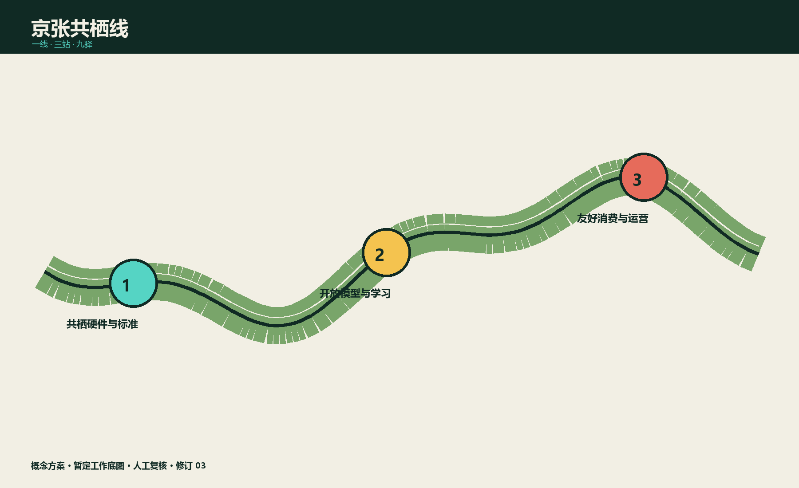
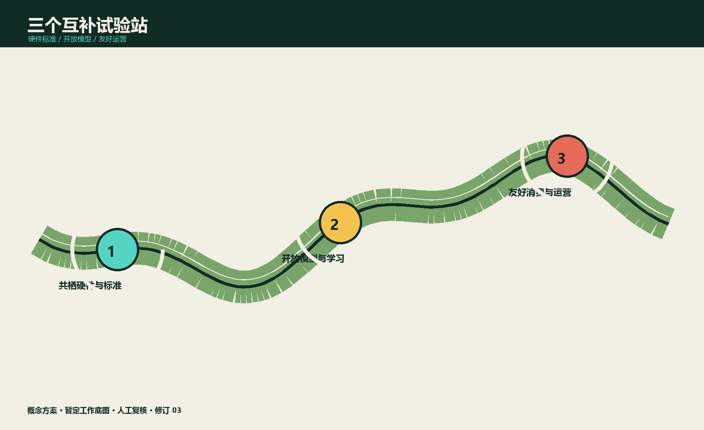
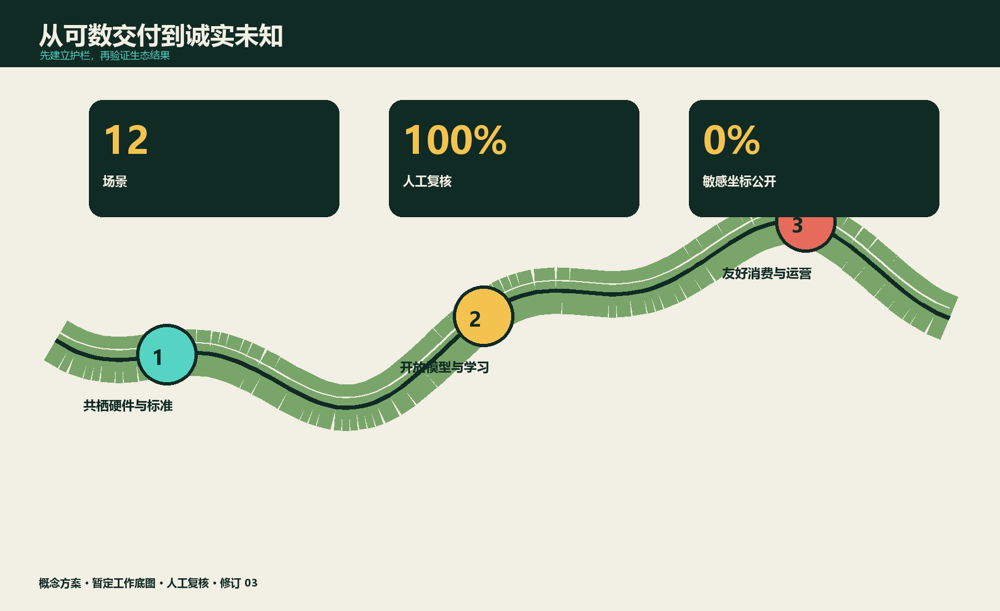

主张
沿百年铁路生长的生物多样性公地：可观察、可参与、可纠错。
沿百年铁路生长的生物多样性公地：可观察、可参与、可纠错。
总览地图 · 三层范围 · 重点区域 · 用地分区 · 交通慢行 · 蓝绿公共空间 · 建筑 · 更新项目 · AI 场景 · 核心指标 · 任务覆盖 · 自检状态 · 来源 · 假设
沿百年铁路生长的生物多样性公地：可观察、可参与、可纠错。
共栖硬件 · 开放模型 · 生物友好运营
人工复核 · 敏感坐标保护 · 非数字备份
本底调查 → 三站试点 → 九驿织补 → 长期维护


